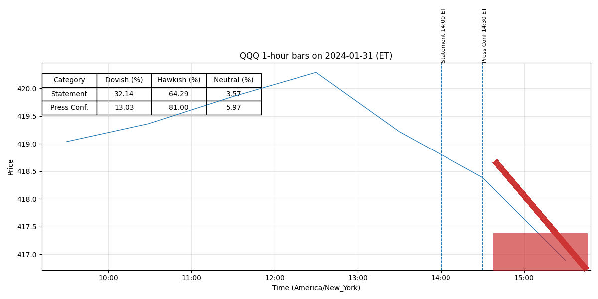

For release at 2:00 p.m. EDT March 20, 2024 Recent indicators suggest that economic activity has been expanding at a solid pace. (0.420)
Job gains have remained strong, and the unemployment rate has remained low. (0.582)
Inflation has eased over the past year but remains elevated. (0.511)
For release at 2:00 p.m. EDT March 20, 2024 Decisions Regarding Monetary Policy Implementation The Federal Reserve has made the following decisions to implement the monetary policy stance announced by the Federal Open Market Committee in its statement on March 20, 2024: • The Board of Governors of the Federal Reserve System voted unanimously to maintain the interest rate paid on reserve balances at 5.4 percent, effective March 21, 2024. (0.516)
• As part of its policy decision, the Federal Open Market Committee voted to direct the Open Market Desk at the Federal Reserve Bank of New York, until instructed otherwise, to execute transactions in the System Open Market Account in accordance with the following domestic policy directive: "Effective March 21, 2024, the Federal Open Market Committee directs the Desk to: (0.516)
For release at 2:00 p.m. EST January 31, 2024
Recent indicators suggest that economic activity has been expanding at a solid pace. (0.414)
Job
gains have moderated since early last year but remain strong, and the unemployment rate has
remained low. (0.548)
Inflation has eased over the past year but remains elevated. (0.511)
For release at 2:00 p.m. EST January 31, 2024
Decisions Regarding Monetary Policy Implementation
The Federal Reserve has made the following decisions to implement the monetary policy stance
announced by the Federal Open Market Committee in its statement on January 31, 2024:
• The Board of Governors of the Federal Reserve System voted unanimously to maintain the
interest rate paid on reserve balances at 5.4 percent, effective February 1, 2024. (0.512)
• As part of its policy decision, the Federal Open Market Committee voted to direct the Open
Market Desk at the Federal Reserve Bank of New York, until instructed otherwise, to
execute transactions in the System Open Market Account in accordance with the following
domestic policy directive:
"Effective February 1, 2024, the Federal Open Market Committee directs the Desk to: (0.523)